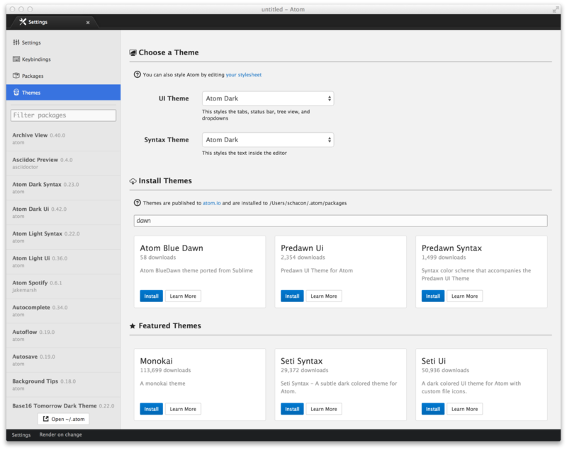
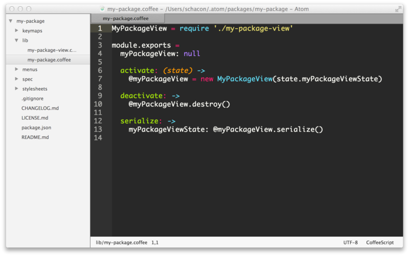

在我们介绍完Atom最基础的部分之后，我们要了解如何真正尽可能使用它了。在这一章中我们会介绍如何为了添加新功能而寻找并安全新的包，如何寻找并安装新的主题，如何以一种更高级的方法处理文本，如何以任何你想要的方式自定义编辑器，如何使用git做版本控制，以及其它。
Atom中的包#
首先，让我们从Atom的包系统开始讲起。像我们前面提到过的那样，Atom自己只是一个非常基础的功能核心，它上面加载了许多有用的包，这些包添加新的功能，像树视图（Tree View）和设置视图（Settings View）。
实际上，默认情况中，Atom中所有的功能由超过70种包组成。例如，你在首次启动Atom时看到的欢迎对话框，拼写检查工具，主题和模糊查找工具都是独立的包，它们使用了你所访问的相同API。我们在第三章将会看到更多细节。
这意味着所有包都可以变得越来越强大，并且它们可以改变任何东西，从整体接口的外观和感觉，到核心功能的基本操作。
要想安装一个新的包，你可以使用设置视图中的install选项卡，现在你已经非常熟悉了。简单地打开设置视图（cmd-,），点击“install”选项卡，并且在“Install Packages”下面输入你要查找的东西，那个地方提示“Search Packages”。
列在底下的是发布到atom.io的包，它是Atom包的官方注册处（registry）。设置面板中的搜索操作，会进入atom.io中的包注册处寻找，之后拉回任何匹配你搜索的东西。

所有的包都会在点击“install”按钮后安装。点击之后会下载并安装相应的包，你的编辑器会拥有那个包提供的功能。
包的设置#
在Atom安装了一个包之后，那个包会出现在“Package”选项卡下面的侧面板中，同时带着Atom预先安装的所有包。你可以在"Filter packages by name"文本框中输入内容，来过滤这个列表并找到你想要找的包。

点击一个包的“Settings”按钮会弹出这个包特定的设置窗口。你可以查看它所有的快捷键，暂时禁用这个包，查看它的源码，查看当前版本，报告问题以及卸载这个包。
如果你安装的任何包有新的版本发布，Atom会自动检测它。你可以从当前窗口，或者“Update”选项卡来升级这个包。这有助于你对所有安装的包保持更新。
Atom的主题#
你也可以从设置视图中，为Atom寻找并安装新的主题。这些主题可以是UI主题，或者语法高亮主题。你可以在“install”选项卡中寻找他们，就像寻找新的包那样。要确保你点击了搜索框旁边的“Themes”切换按钮。

点击主题的标题会弹出它在atom.io上的简介页面，通常会显示它的快照。你可以在安装前看看它是什么样子。
点击“install”按钮会安装该主题，并且在“Theme”下拉框中可供使用。就像我们在“更改主题颜色”一节看到的那样。

命令行#
你也可以在命令行中通过npm安装主题包。
通过在控制台运行一下命令，检查你是否安装了apm：
$ apm help install
你会看到一条有关apm install命令的详细信息打印出来。
如果没有的话，打开Atom，运行Atom > Install Shell Commands菜单apm和atom命令。
你也可以使用apm install命令安装包：
apm install <package_name>会安装最新版本。apm install <package_name>@<package_version>会安装指定版本。
比如，apm install emmet@0.1.5会安装Emmet包的0.1.5发行版。
你也可以使用apm寻找新的包来安装。如果你运行apm search命令，你可以在包注册处搜索想要找的东西。
$ apm search coffee Search Results For 'coffee' (5) ├── coffee-trace Add smart trace statements to coffee files with one keypress each. (77 downloads, 3 stars) ├── coffee-navigator Code navigation panel for Coffee Script (557 downloads, 8 stars) ├── atom-compile-coffee This Atom.io Package compiles .coffee Files on save to .js files. (myJavascript.coffee -> myJavascript.js) (349 downloads, 4 stars) ├── coffee-lint CoffeeScript linter (3336 downloads, 18 stars) └── git-grep `git grep` in atom editor (1224 downloads, 9 stars)
你也可以使用apm view查看指定包的详细信息。
$ apm view git-grep git-grep ├── 0.7.0 ├── git://github.com/mizchi/atom-git-grep ├── `git grep` in atom editor ├── 1224 downloads └── 9 stars Run `apm install git-grep` to install this package.